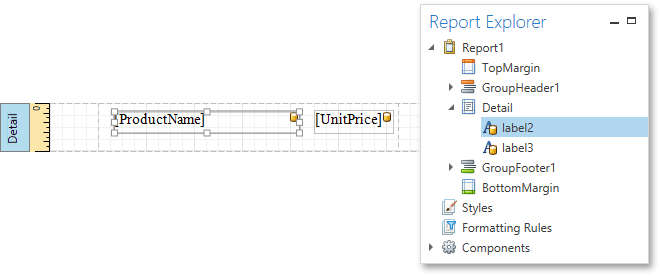

Binding Report Controls to Data
Report controls can either display static information or dynamic data obtained from the bound data source.
Data-bound controls are indicated by a yellow database icon, both on the Design Surface and in the Report Explorer.

To embed dynamic information to a report, if this information is contained in the report data source, you can use one of the following approaches.
After a control is bound to data, you can employ additional features that are listed in the Special Capabilities section of this document.
Using the Field List
The Report Designer allows you to create a data-aware element using the Field List. To do this, switch to the Field List panel, click the desired field item and drop it onto the report band. This automatically creates a control bound to the selected data field.

Using the Context Menu
Right click an existing report control, and in the invoked context menu, click the Edit... link.
In the invoked Edit dialog, expand the Data Binding drop-down and select the required data field.
To unbind a control's property, expand the Data Binding drop-down and click the Clear button.
Using the Properties Panel
Select a control (e.g., on the Design Surface) and switch to the Properties Panel. Expand the Data Bindings option and specify a data field for the required property (e.g., Text).
To unbind a control's property, expand the corresponding drop-down and click the Clear button.
Special Capabilities
After a control is bound, you can apply formatting to its dynamic content (e.g., for it to be treated as currency, or date-time content). For details on this, refer to Formatting Data.
It is possible to force a control to display a result of a summary function calculated across the data field to which it is bound. For more information, see Calculating Summaries.
Another noteworthy option is to combine both static and dynamic content within the same control (e.g., to append some text prefix or postfix to a value obtained from a database), or even bind a control to multiple data fields at one time. This is detailed in Using Mail Merge.
If you are required to perform pre-calculations over the data field to which a control is bound, you can do so by creating a calculated field, and binding the control to it. This is detailed at Calculated Fields.
In turn, a calculated field may contain both dynamic and static parameters, which can be requested each time a report is being previewed. For more information, refer to Report Parameters.